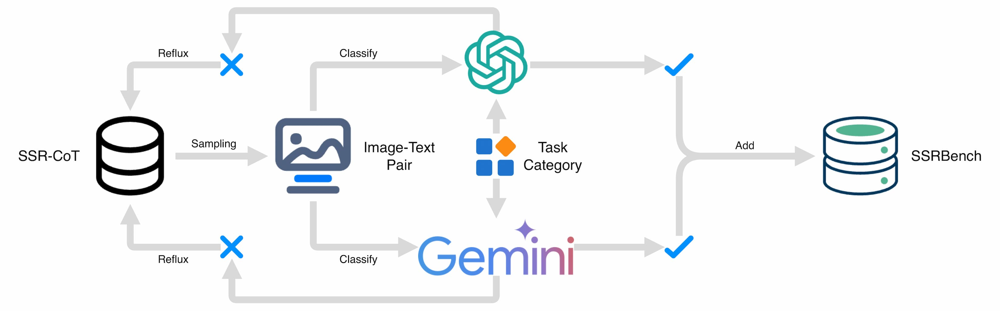

SSRBench Benchmark

We propose SSRBench, a novel evaluation benchmark created from the SSR-CoT dataset. Importantly, the data incorporated into SSRBench will be fully removed from SSR-CoT to prevent overlap.

Examples for each task within the benchmark SSRBench.